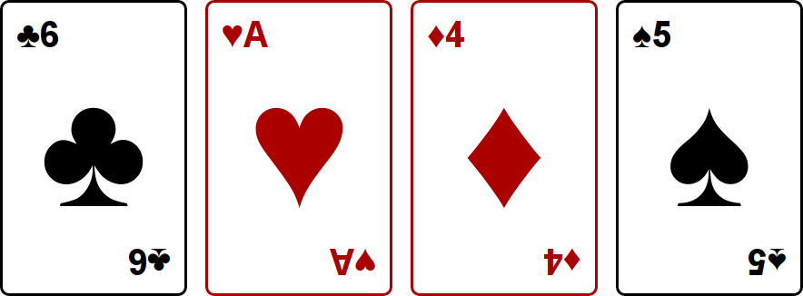
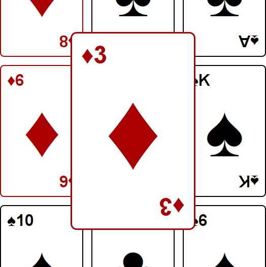
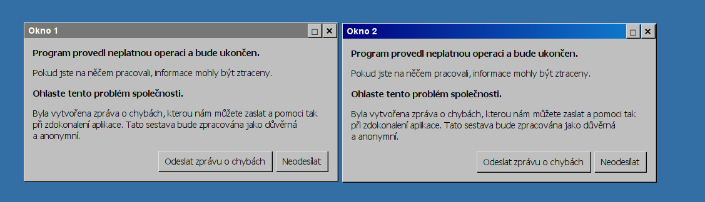
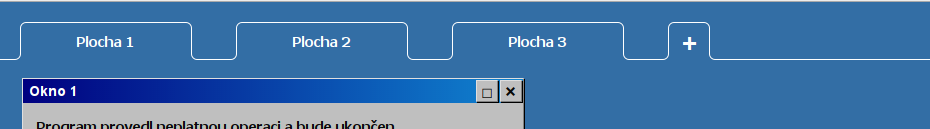
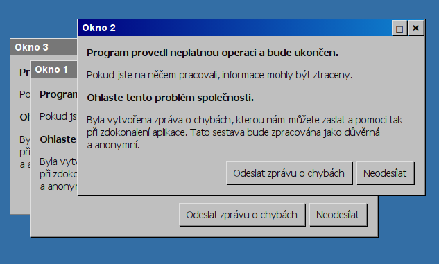

Soutěž v programování – 30. ročník
Krajské kolo 2015/2016
max. 10 bodů
Vytvořte stránku, na které se zobrazí karty podobně jako na obrázku:
Každá karta je 320 px vysoká a 200 px široká. Mezi kartami jsou viditelné rozestupy, stejně tak od okrajů stránky. Velikost písma přibližně odpovídá obrázku.
Symboly na kartách jsou unicodové znaky:
| ♠: U+2660 | ♣: U+2663 | ♥: U+2665 | ♦: U+2666 |
Pro připomenutí, karty mohou nabývat hodnot A, 2, 3, 4, 5, 6, 7, 8, 9, 10, J, Q nebo K.
Karty jsou dvouhlavé, tedy text vespod je vzhůru nohama. Srdce a káry jsou červené, piky a kříže černé. Nemusíte zachovat hodnoty jako na obrázku, ale musíte použít všechny čtyři symboly.
Celkem bude zobrazeno deset karet. Karty mají pevnou velikost, a na šířku je jich maximum kolik se vejde do okna prohlížeče. Při změně velikosti okna by se měly přeskládat.
Pokud na kartu najedete myší, zvětší se přibližně o půlku, tedy na 300 px šířky. Všechny elementy na kartě se proporčně zvětší a zůstanou na správných místech vzhledem ke zvětšené kartě. Jakmile myší kartu opustíte, vrátí se do původní velikosti.
Zvětšená karta musí překrývat okolní karty a žádné jiné karty se nesmějí pohnout.
Bonusové body dostanete, pokud bude zvětšování plynulé (animované), u každé karty nezávislé na ostatních.
Na stránku viditelně umístěte tlačítko s textem "zamíchat". Po jeho stisknutí zobrazené karty zmizí, a místo nich se najednou objeví deset jiných, jejichž hodnoty a symboly budou zvolené náhodně. Karty se mohou opakovat.
Vedle tlačítka umístěte textové políčko s počátečním textem "10". Při kliknutí na tlačítko zamíchat se objeví tolik karet, kolik je napsáno v tomto políčku. Pokud není zadáno číslo větší než nula, neobjeví se žádné karty.
Funkčnost kontrolujte pouze v jednom prohlížeči, který si zvolí soutěžící.
V případě implementace nezávislého zvětšování není vyžadováno, aby karty ležely přes sebe v pořadí ve kterém byly přejety myší. Stačí, pokud pouze karta na které je právě myš bude nad všemi ostatními.
Nezávislé zvětsování poznáte třeba tak, že budete rychle jezdit myší tam a zpátky přes obrazovku.
| Body | Za co |
|---|---|
| 1 | jsou zobrazeny karty, jsou použité všechny symboly |
| 2 | text vespod karty je vzhůru nohama, karta má kulaté rohy, je správně červená nebo černá, velký symbol je přesně uprostřed (á 0.5 bodu) |
| 1 | při najetí myší se karta zvětší (včetně obsahu), při odjetí zase zmenší, přitom neovlivní ostatní karty a "nerozbije se" |
| 0.5 | zvětšená karta překrývá karty okolo ve všech směrech |
| 1 | při zvětšování je viditelná animace |
| 0.5 | animace je u každé karty nezávislá, tj. po přejetí myši přes několik karet se všechny chvíli pohybují najednou |
| 1 | karet je (na začátku) 10 a přeskládávají se se změnou šířky prohlížeče |
| 1 | kliknutím na tlačítko zamíchat se vygenerují nové náhodné karty |
| 1 | karet se generuje správný počet podle hodnoty v textovém poli |
max. 30 bodů
Dnešní prohlížeče mají schopnosti, o kterých se mohlo programátorům před lety jen zdát. Nevěříte?
Zkusíte si v prohlížeči vytvořit Windows 98. V celé úloze nesmíte používat obrázky, v opačném případě nedostanete žádné body.
Stránka bude mít modré pozadí. Na ní budou zobrazena dvě okna s obsahem jako na obrázku:
Dbejte na to, aby se okna takto zobrazila v každém prohlížeči na každém operačním systému – nespoléhejte na to, že systémová tlačítka mají právě tento vzhled. 3D efektu tlačítek a oken docílíte tak, že na levém a horním okraji bude barva světlejší, zatímco na pravém a dolním bude tmavší. Všechna tlačítka lze viditelně stisknout a chovají se podobně jako systémová tlačítka.
Aktivní okno se od neaktivního odliší pomocí horního pruhu. Aktivní okno má pruh s přechodem od tmavé ke světlé modré. Kliknutím kamkoli do okna lze okna přepnout.
Tlačítkem „Odeslat zprávu o chybách“ se vyvolá lokální e-mailový klient, s adresou příjemce <soutez@example.com>.
Kliknutím na tlačítko se čtverečkem se okno maximalizuje. Takové okno zabírá celou plochu. Opětovným kliknutím na tlačítko se čtverečkem se okno vrátí do původního tvaru.
Lidem, co na počítači pracují, nemůže jedna plocha stačit. Proto přidejte záložky:
Dnes už je důležité, aby byl operační systém krásný. Záložky by měly mít všechny hrany zaoblené jako na obrázku. Pamatujte, že nesmíte používat obrázky.
Kliknutím na křížek nebo tlačítko „neodesílat“ se okno zavře. Abyste lépe poznali atmosféru dob minulých, při zavření libovolného okna se dvě nová otevřou.
Když se otevře nové okno, objeví se na nějakém místě na obrazovce tak, aby v případě, že se jich objeví více najednou, se vzájemně nepřekrývala. Můžete se inspirovat svým operačním systémem. Nová okna udržují číslování (Okno 1, Okno 2, Okno 3, …)
Okno s chybovou hláškou se také otevře, pokud nešťastně dvojkliknete na plochu. V takovém případě se otevře na místě, kde jste dvojklikli.
Za horní pruh jde okno chytit a přesouvat. Pokud se dvě nebo více oken překrývá, nahoře je to, které jste používali nejpozději.
Okno lze částečně vysunout z obrazovky. Monitor ale nezvětšíte, proto by se nemělo nic stát ani s prohlížečem. Plocha by také neměla mít posuvníky.
Aktivní může být jen jedna plocha, jejíž záložka je vizuálně odlišená. Vhodný způsob vizuálního odlišení sami zvolte (ukázkový obrázek jej neobsahuje). Klikáním na záložky se přepínají plochy – každé okno je právě na jedné.
Kliknutím na záložku „+“ se přidá další plocha.
| Body | Za co |
|---|---|
| 1 | CSS projde validátorem CSS 3 https://jigsaw.w3.org/css-validator/ |
| 1 | jsou zobrazena dvě okna bez ohledu na formátování |
| 1 | okno vypadá podobně jako na obrázku, podobné barvy, existence tlačítek, texty atp. |
| 1 | pruh aktivního okna obsahuje barevný přechod |
| 1 | všechna 4 tlačítka v okně nespoléhají na vzhled systémových tlačítek, kurzor myši má tvar šipky |
| 1 | jsou zobrazeny záložky bez ohledu na vzhled a funkci |
| 2 | záložky mají kulaté rohy přesně podle zadání (včetně rohů mezi záložkami) |
| 1 | linka od záložek pokračuje přes celou šířku obrazovky |
| 1 | spodní strana záložek není ohraničena linkou |
| 1 | kliknutím kamkoli do okna se přepne aktivní okno (modrý pruh) |
| 1 | tlačítko odeslat vyvolá e-mailového klienta se zadanou adresou |
| 2 | okna jdou maximalizovat a vrátit zpět (za obojí bod) |
| 1 | dvojklikem na plochu se otevře nové okno |
| 1 | toto okno se otevře pod kurzorem myši |
| 1 | křížkem a tl. neodesílat se dané okno zavře |
| 1 | při zavření okna libovolnou metodou se otevřou dvě nová |
| 1 | okna se otevírají na rozumných místech (ne mimo obrazovku, ne přesně přes sebe) |
| 1 | okna udržují souvislé číslování |
| 2 | okna jdou přesouvat taháním za pruh |
| 1 | přesouvání je plynulé, okna neposkakují při uchopení, pohybují se i při vysunutí kurzoru mimo okno prohlížeče |
| 1 | tři okna se správně řadí nad sebe podle pořadí aktivace |
| 1 | při změně velikosti okna prohlížeče zůstává maximalizované okno přes celou plochu, ostatní okna nemění svou pozici |
| 1 | plochy jdou přepínat, je vidět, která plocha je aktivní |
| 1 | na ostatních plochách se dají otevírat nová okna dvojklikem |
| 1 | každé okno je vidět právě na jedné ploše |
| 1 | mezi přepnutími ploch tam a zpět si okna zachovají polohu |
| 1 | kliknutí na tlačítko plus přidá novou plochu |